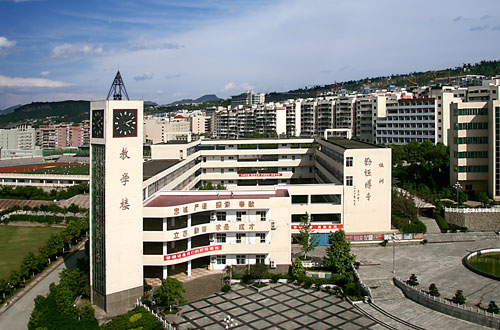
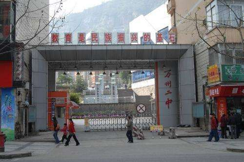

- 2003.9-2009.6
- 2009.9-2012.6
- 2012.9-2015.6
- 2015.9-至今
<
>
-
1

2003.9-2006.1,就读于重庆市万州区燕山乡长柏村希望小学.
2006.3-2009.6,就读于重庆市万州区燕山中学.
不得不说，小学的上学条件还是比较艰苦的，我在三年级的时候就到镇上的学校寄宿了，当时非常不习惯，不过后来慢慢地和同学搞好关系逐渐适应了这种条件。还有一件事，我小学好像没有迟到过，哈哈。
-
2

2009.9-2012.6,就读于重庆市万州高级中学.
老师在毕业时送给我们的诗
扬子江边，学府广场，书声朗朗。聚四海学子，修身习礼；三载奋斗，一朝铿锵。巾帼逐智，须眉强壮，今非昔比皆成长，好儿郎。展壮丽图画，还需去闯！
诸君前程锦绣，唯诚恳求学是坦途。叹为师愚昧，见闻有疆；穿针引线，只做嫁裳；投庙八方，高人定在，蔽开胸怀习绝唱。天桥上，谈别后岁月，要有主张。
-
3

2012.9-2015.6,就读于重庆市万州第二高级中学
我高中算是一个比较努力的人，但也是那种不会提高效率的人，当时并没发现这一点，知识的漏洞日积月累，到高三后期，学习就像病人病入膏肓一样，没办法改进。我们化学老师说，基础不牢，地动山摇！我是真的领悟到这句话了。不过学习之路还没结束，一切貌似还可以弥补。
-
4
2015.9-至今,就读于重庆交通大学
在大学里面，我见到了乐于助人的好朋友以及热爱学习的好同学。我看到了他们的优点，学到了他们的方法，我也慢慢地变得像他们一样更加有毅力。就像初中班主任送给我们的诗句一样，高人定在，我仍需继续保持谦虚的态度，不断达到他们的高度.